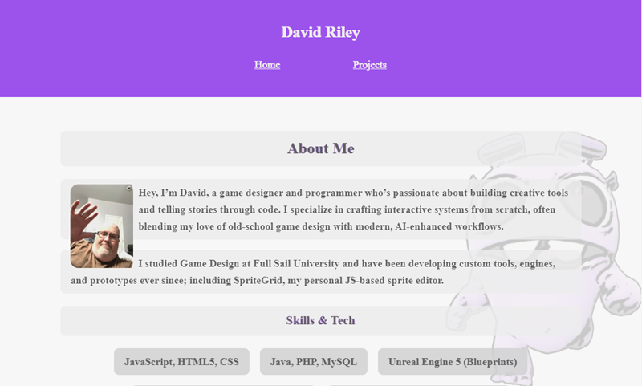

Responsive Portfolio Website
My digital basecamp — clean, responsive, and coded from the ground up with my AI partner.

About This Project
A hand-coded, responsive showcase built from the ground up, featuring a clean layout and custom PHP includes to unify navigation and styling. Organized into key sections—including a dynamic home overview, project-specific pages, and an accessible contact form—this site exemplifies thoughtful design structure, modular architecture, and deliberate user experience. Demonstrates responsible front-end design, backend DRY principles, and craftsmanship in digital presentation.
Features
- Mobile-first Flexbox layout
- JS-based routing for project previews
- Image modal system with no libraries
- Accessibility-aware design
- Booska the desktop-only mascot (Easter egg 🐾)
Built With
- HTML5, CSS3, JavaScript (vanilla)
- Hostinger for deployment
- Spruce-powered development support 💜
You're using it right now. Click around, explore the code, and discover how I think about flow, clarity, and joy in design.
Links
-
 You're Using It
You're Using It
-
 Itch.io
Itch.io
-
 BMaC
BMaC
-
 Ko-fi
Ko-fi
-
 Patreon
Patreon
-
 GitHub Repository
GitHub Repository
-
 OutBox Games' Blog
OutBox Games' Blog
-
 Trello
Trello